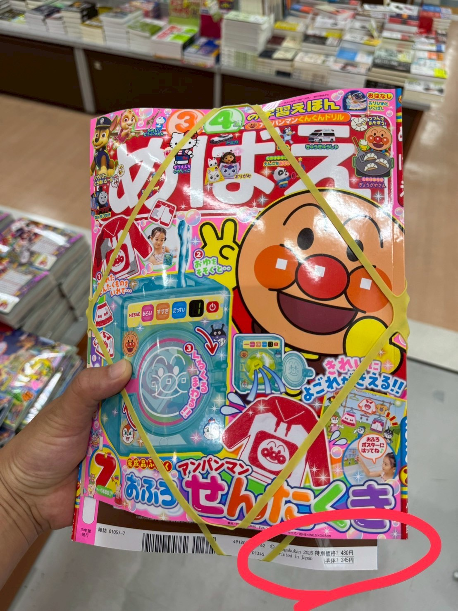

本期最大亮點：附錄 アンパンマン おふろせんたくき，結合麵包超人角色與洗澡情境，讓孩子透過角色扮演與操作遊戲，增加親子互動的樂趣。
《めばえ》是小學館長年出版的幼兒雜誌，每期皆以熱門角色搭配互動式附錄，內容結合故事、遊戲、貼紙與生活主題，深受日本親子家庭喜愛。
這一期最大的價值在於附錄的遊戲性，而非收藏性。對 2～5 歲左右喜歡麵包超人的孩子來說，能搭配洗澡或生活情境遊玩，比一般靜態附錄更有吸引力。若作為台灣販售商品，建議搭配實際開箱影片，能有效降低家長對附錄大小與玩法的疑慮。
| 日文書名 | めばえ 2026年7月号 |
|---|---|
| 出版社 | 小学館 |
| 主附錄 | アンパンマン おふろせんたくき |
| 封面售價 | 特別価格 1,480円 |
| 影片 | YouTube 公開開箱影片 |
| 備註 | 內容依封面與公開影片整理，實際內容以出版社出版品為準。 |
日本親子選物誌